Selecione abaixo se deseja ver nossas dicas de livros ou produtos essenciais:
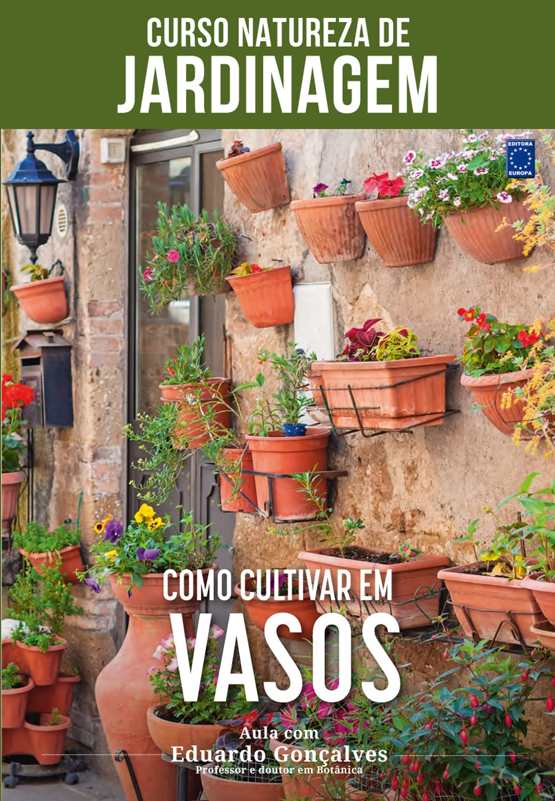
Curso Natureza – Jardinagem, Cultivar em Vasos
Um guia visual e prático para transformar qualquer espaço em um jardim produtivo e acolhedor. Perfeito para quem ama plantar em vasos.
Comprar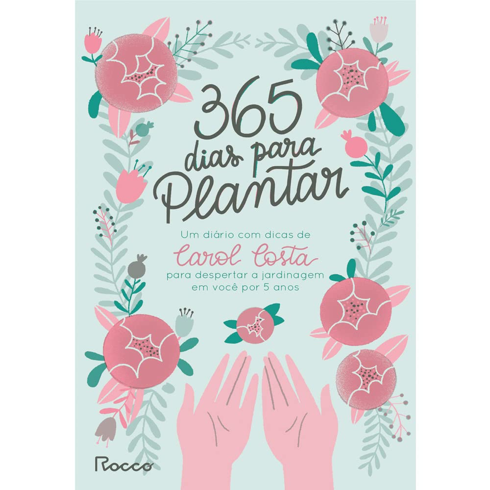
Dias Para Plantar – Carol Costa
Um convite afetivo para se reconectar com a natureza através da jardinagem. Repleto de reflexões e dicas com o jeitinho único da Carol.
Comprar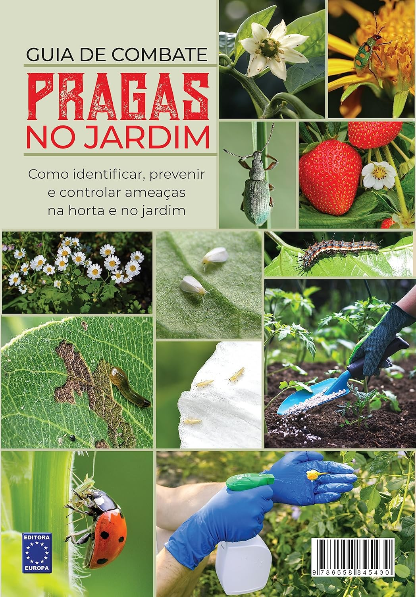
Guia de Combate às Pragas no Jardim
Identifique, previna e elimine pragas com orientações práticas para um jardim mais saudável.
Comprar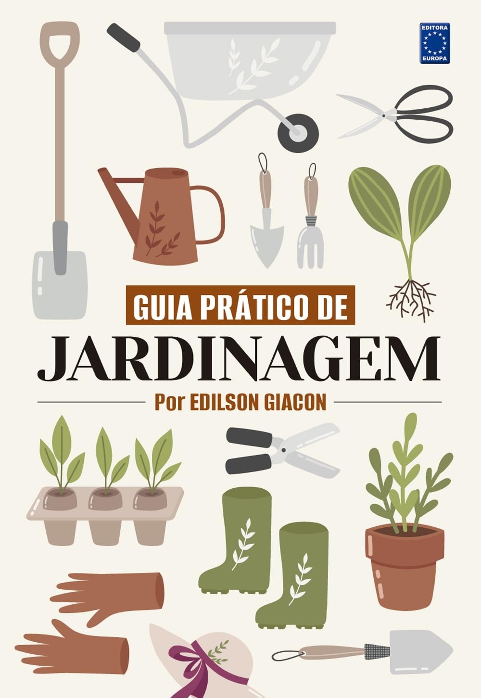
Guia Prático de Jardinagem
Um manual acessível para quem quer cultivar plantas com sucesso, do solo ao florescimento.
ComprarPragas e Doenças do Jardim
Guia visual completo com diagnósticos e soluções naturais para manter seu jardim livre de ameaças.
Comprar
Kokedama: Guia Completo
Passo a passo detalhado em português para criar, regar e exibir kokedamas com segurança e estilo.
Comprar
Kokedama: A Step-by-Step Guide
Tutorial ilustrado em inglês, ideal para quem prefere instruções visuais com fotos de cada etapa.
Comprar
Kokedama Complete Guide
Dicas de decoração, escolha de plantas e cuidados diários — perfeito para iniciantes curiosos.
Comprar
Introduction to Kokedama
Conceitos básicos, materiais necessários e erros comuns para evitar na primeira kokedama.
Comprar
Kokedama Sem Mistério
Livro digital nacional que ensina técnicas simples para transformar qualquer planta em kokedama charmosa.
Comprar
Caring for Your Kokedama
Guia focado em manutenção: poda, rega por imersão e variedades de plantas mais resistentes.
Comprar
Plantas Tropicais: Guia Prático de Paisagismo Sustentável
Aprenda a projetar paisagens tropicais de forma prática e ecológica, ideal para ambientes externos e internos.
Comprar
Plantas Ornamentais – Volume 1
Referência completa para identificação e cultivo de plantas ornamentais — essencial para paisagistas e entusiastas.
Comprar
Paisagismo Sustentável para o Brasil
Integre biodiversidade, economia de recursos e design no paisagismo brasileiro com enfoque sustentável.
Comprar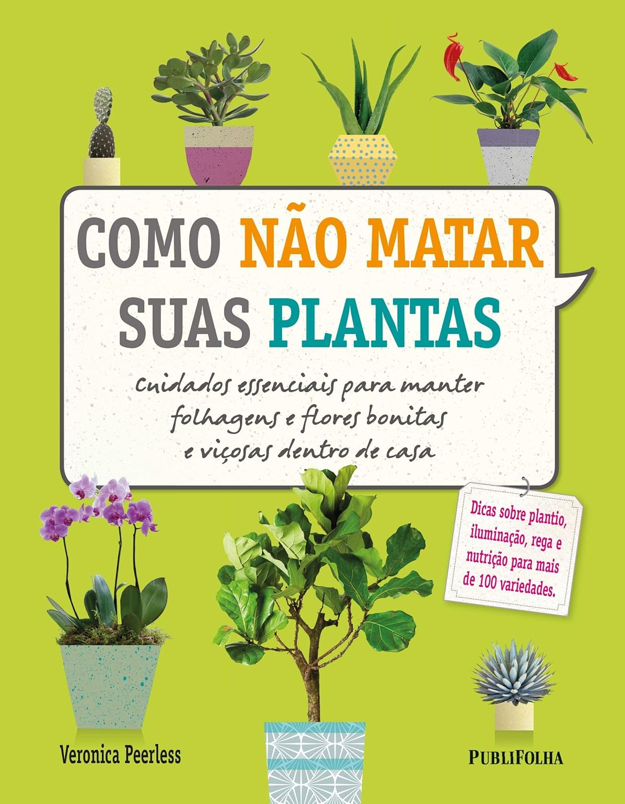
Como Não Matar Suas Plantas
Um guia prático e direto para quem quer cuidar bem das plantas, mesmo sem ter "dedo verde".
Comprar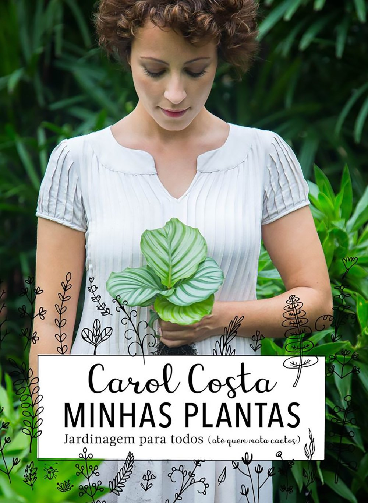
Minhas Plantas – Carol Costa
Livro leve, cheio de humor e dicas práticas da jardineira mais querida do Brasil.
Comprar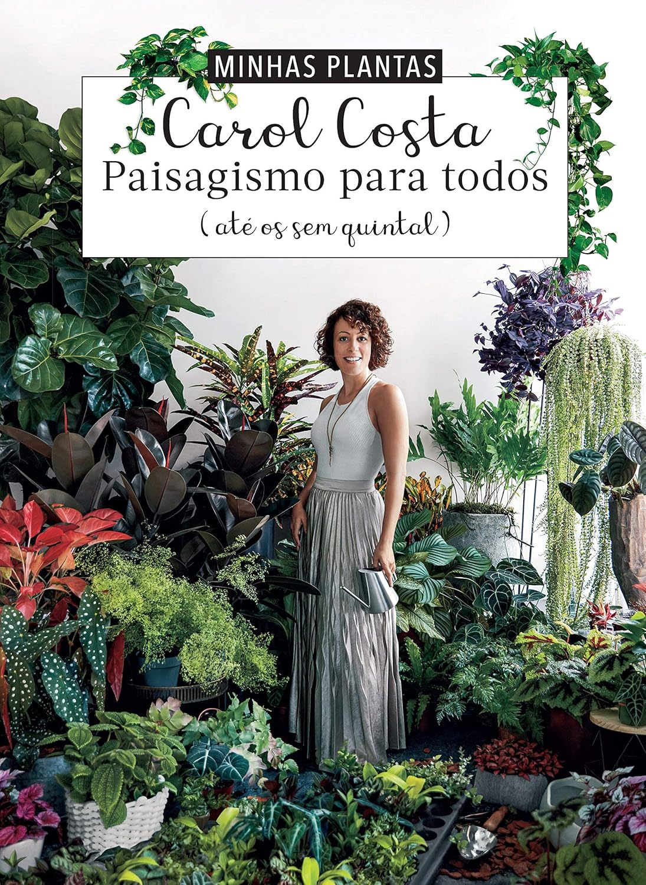
Minhas Plantas – Paisagismo para Todos
Transforme qualquer espaço em um jardim com as orientações práticas e acessíveis de Carol Costa.
Comprar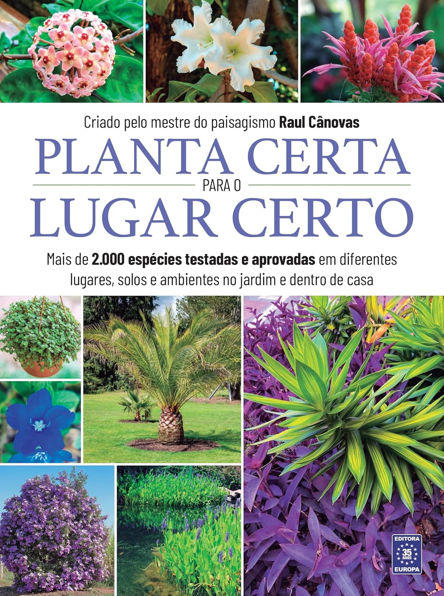
A Planta Certa para o Lugar Certo
Aprenda a escolher a planta ideal para cada ambiente da sua casa com este guia visual e funcional.
Comprar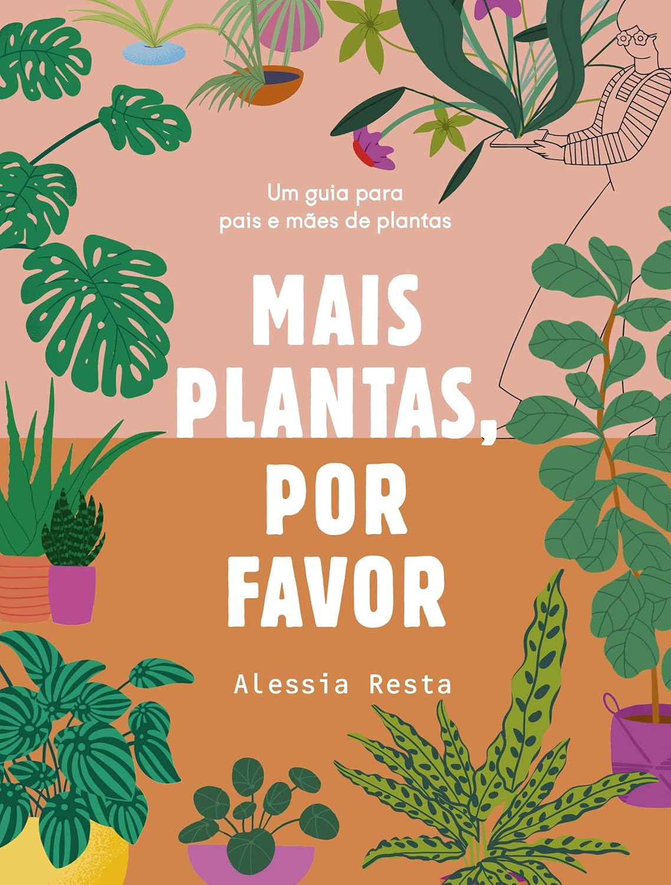
Mais Plantas, Por Favor
Descubra como criar um lar verde, cheio de estilo e acolhimento com este livro inspirador.
Comprar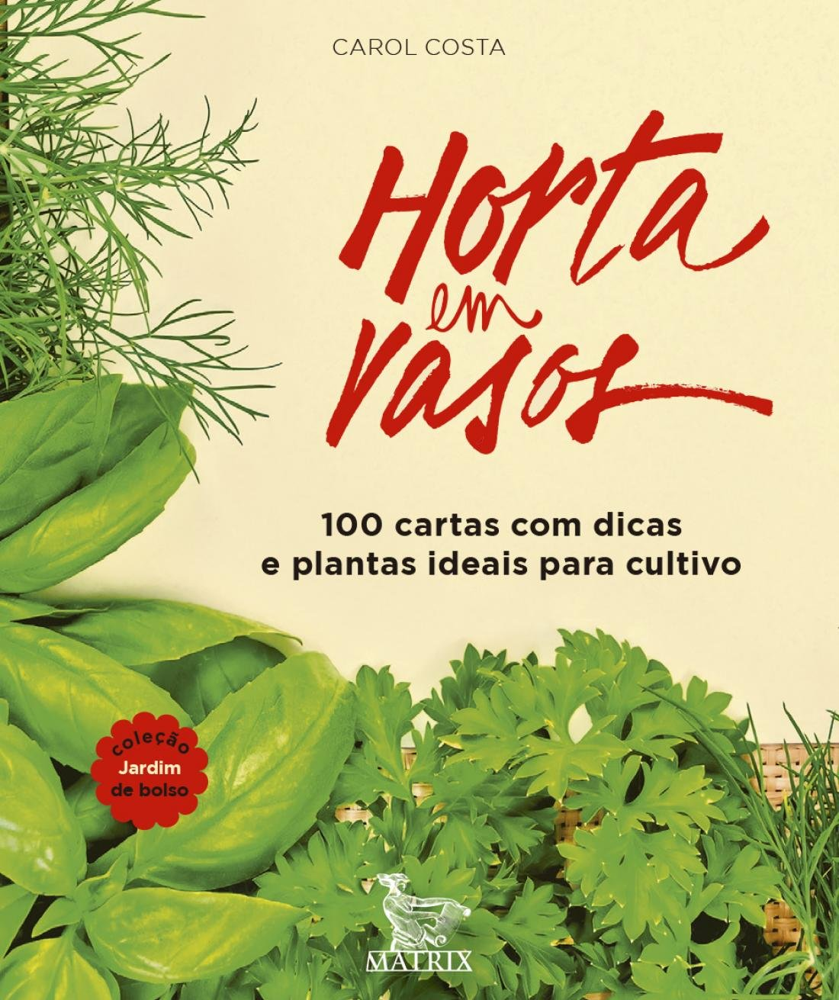
Horta em Vasos – Carol Costa
Aprenda a cultivar temperos e hortaliças em qualquer espaço com orientação simples e divertida.
Comprar
A Vida das Plantas
Uma reflexão poética e científica sobre o universo vegetal, ideal para quem deseja ir além do cuidado básico com plantas.
Comprar
Cat Sense
Compreenda como os gatos pensam, sentem e se comportam. Leitura essencial para criar um ambiente seguro e feliz.
Comprar
Braiding Sweetgrass
Uma obra que entrelaça sabedoria indígena, ciência botânica e amor pela natureza. Profundo e transformador.
ComprarDefende – Cochonilha, Lagarta e Repelente Natural
Proteja suas plantas com um repelente natural eficaz contra cochonilhas, lagartas e outras pragas comuns.
Comprar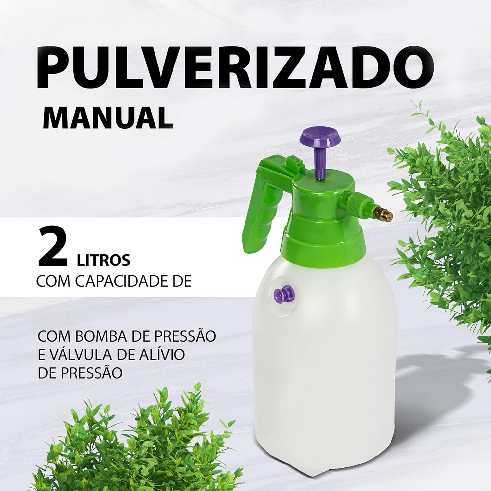
Pulverizador de Compressão Prévia – 2L Pali
Aplicação prática e eficiente de soluções no jardim com pulverização precisa e ergonômica.
Comprar
Tesoura para Poda Manual com Trava
Ferramenta de corte precisa, segura e confortável para manter suas plantas sempre bem cuidadas.
Comprar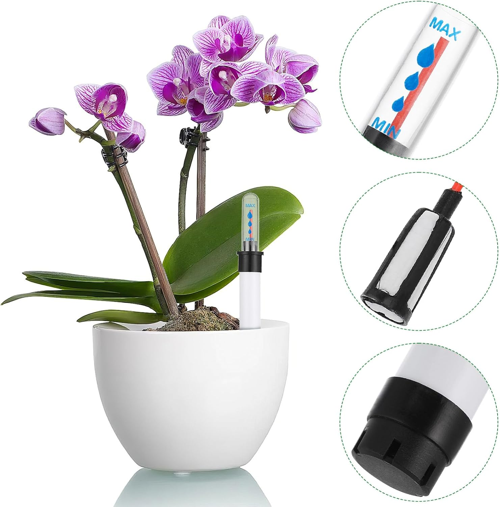
Indicador de Umidade Toyvian
Pacote com lembretes visuais que mudam de cor para indicar a necessidade de rega, ideal para vasos internos.
Comprar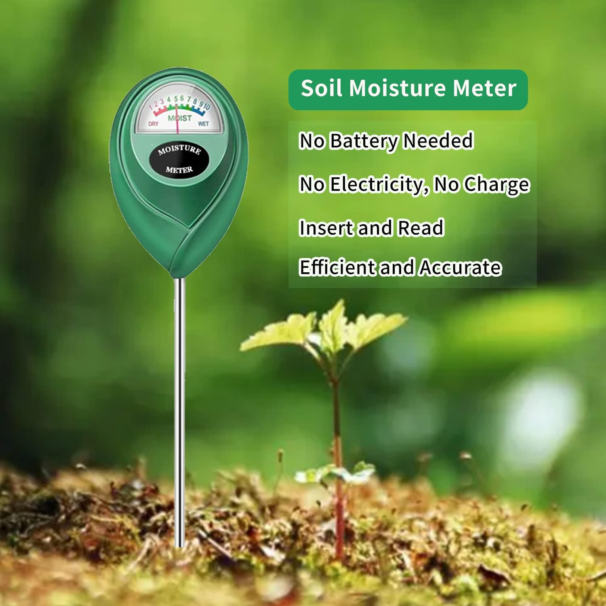
Higrômetro Digital Censinda
Monitore a umidade com precisão em ambientes internos e externos. Perfeito para quem quer mais controle.
Comprar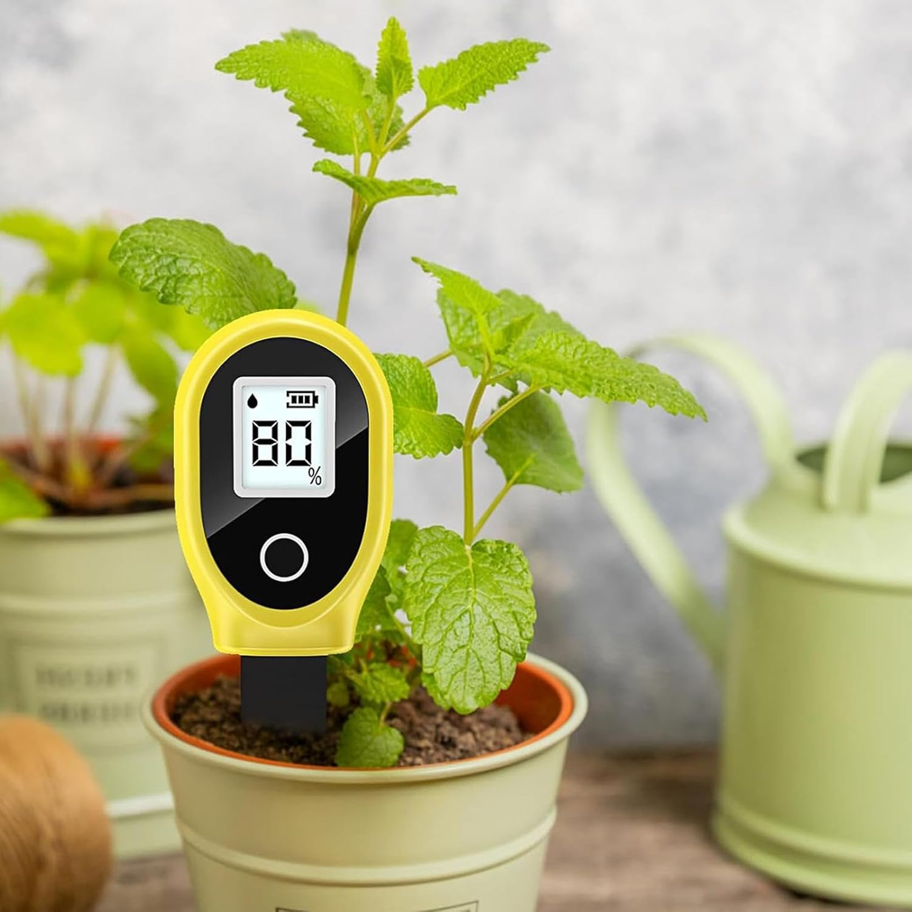
Testador de Umidade de Solo
Ferramenta simples e eficaz para saber quando regar suas plantas com precisão. Funciona sem baterias.
Comprar
Kit Jardinagem com Maleta
Conjunto completo com ferramentas resistentes e maleta organizadora. Ideal para quem cultiva em casa.
Comprar
Kit Jardinagem com Luvas
Ferramentas ergonômicas com proteção para as mãos. Perfeito para jardineiras iniciantes e cuidadosas.
Comprar
Pulverizador de Compressão Tramontina
Prático para aplicação de água, fertilizantes ou defensivos naturais com controle de jato e alça anatômica.
Comprar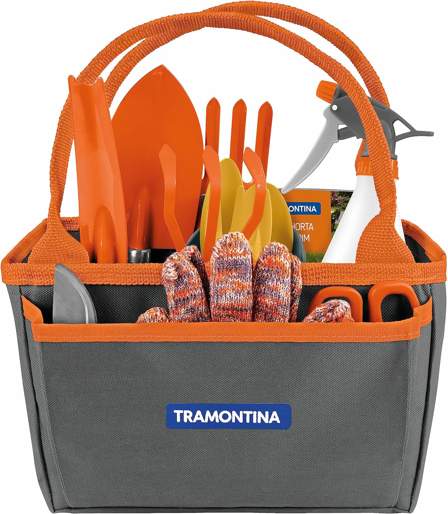
Kit Tramontina para Jardinagem
Conjunto completo com bolsa organizadora e ferramentas essenciais. Ideal para quem está começando ou quer praticidade no dia a dia.
Comprar